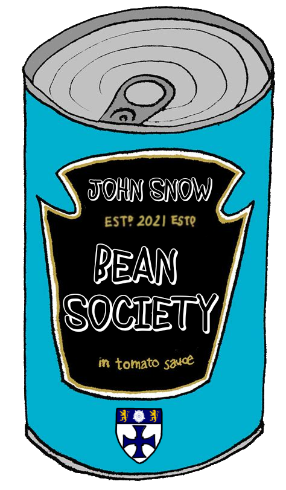

We are just lovers of beans, we want to get together to attempt to write a review of beans at every Durham establishment which sells them. We want to create a comprehensive list so that our members know where to get the best beans in Durham. We want to create a space for the appreciation and discussion surrounding a food that is integral to surviving student life.